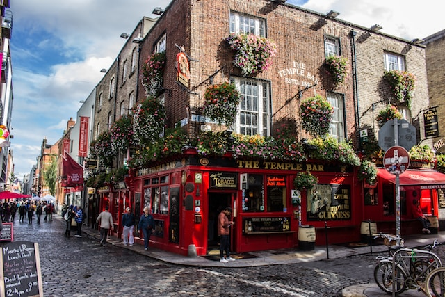
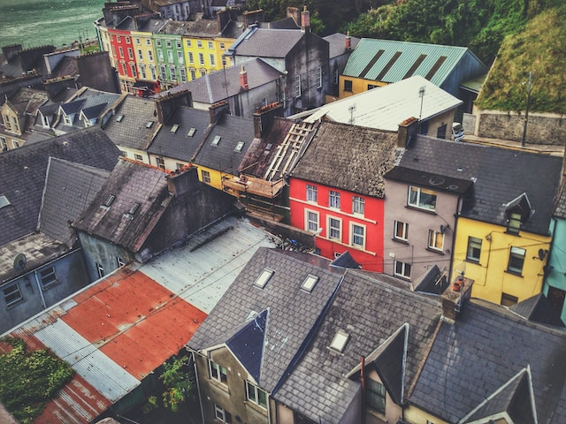

Dublin
Dublín, la capital de Irlanda, es una ciudad vibrante y llena de historia que combina lo moderno con lo tradicional de una manera única. Esta ciudad cosmopolita a orillas del río Liffey es conocida por sus encantadoras calles empedradas, sus famosos pubs, como el Temple Bar, donde puedes disfrutar de la música en vivo y la cultura irlandesa, y su impresionante arquitectura georgiana.
Galway

Galway, situada en la costa oeste de Irlanda, es una ciudad pintoresca y encantadora siendo el corazón cultural del país. Esta ciudad costera es conocida por su ambiente amigable y relajado, así como por su rica tradición cultural y musical. El centro de Galway de calles adoquinadas, tiendas boutique y pubs tradicionales donde se puede disfrutar de la música en vivo y la danza tradicional irlandesa.
Cork
Cork, la segunda ciudad más grande de Irlanda, es un vibrante centro urbano ubicado en la costa suroeste del país. Construida a orillas del río Lee, se caracteriza por su ambiente acogedor y su rica historia. El English Market, un mercado cubierto con más de 200 años de historia, es un lugar emblemático donde se pueden encontrar productos locales.